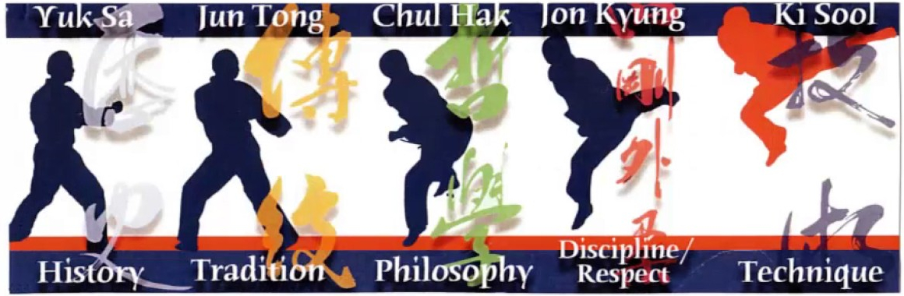

Los cinco valores Moo Do: Historia, Tradición, Disciplina/Respeto, Filisofía y Técnica son la columna vertebral de nuestra orgullosa identidad Moo Do.
Estos valores coexisten ínterdependientemente con cada uno de los elementos fortaleciendo el significado de los otros cuatro.
Cuando aplicamos los cinco valores Moo Do a nuestro entrenamiento diario, no solamente estamos fortaleciéndonos como practicantes sino como individuos que proveemos de influencia positiva dentro de nuestra sociedad.
Yo confío en que esta discusión acerca de nuestros cinco Valores Moo Do ayudarán a los practicantes de la Moo Duk Kwan a incluirlos en todos los aspectos de sus vidas como elementos de acción básica a sus conductas en vez de tratarse solamente de meros conceptos de los cuales solamente se habla.
